CYLINDER BLOCK > REASSEMBLY |
| 1. INSTALL STUD BOLT |
Using E7 and E8 "TORX" socket wrenches, install the stud bolts.
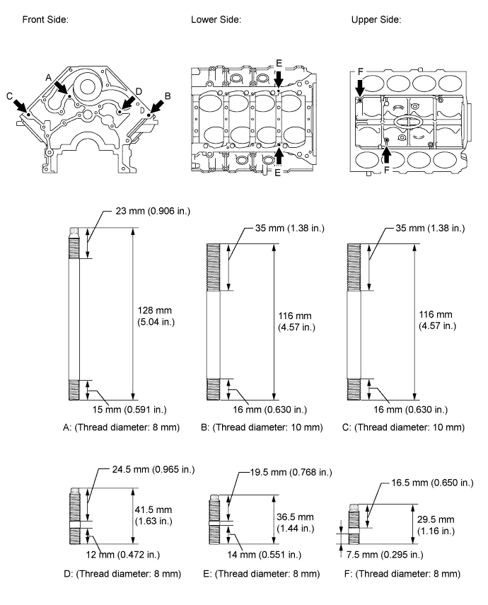
| 2. INSTALL NO. 1 OIL NOZZLE SUB-ASSEMBLY |
 |
Using a 5 mm hexagon wrench, install the 4 oil nozzles with the 4 bolts.
| 3. INSTALL PISTON SUB-ASSEMBLY WITH PIN |
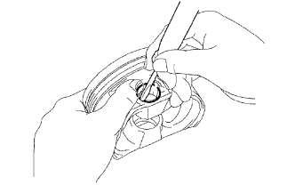 |
Using a small screwdriver, install a new snap ring on one side of the piston pin hole.
Coat the piston, piston pin and connecting rod with engine oil.
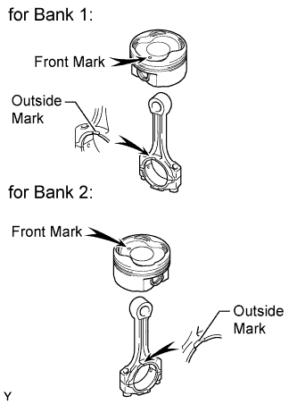 |
Align the marks of the piston and connecting rod as shown in the illustration. Then push in the piston pin with your thumb until the piston pin contacts the snap ring.
| Item | Front Mark |
| for Bank 1 | 1 |
| for Bank 2 | 2 |
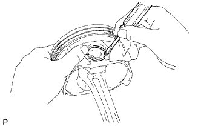 |
Using a small screwdriver, install a new snap ring on the other side of the piston pin hole.
 |
Check the fitting condition between the piston and piston pin.
Move the connecting rod back and forth on the piston pin. Check the fitting condition.
If abnormal movement is felt, replace the piston and pin as a set.
Rotate the piston back and forth on the piston pin. Check the fitting condition.
If abnormal movement is felt, replace the piston and pin as a set.
| 4. INSTALL PISTON RING SET |
Install the oil ring expander and 2 side rails by hand.
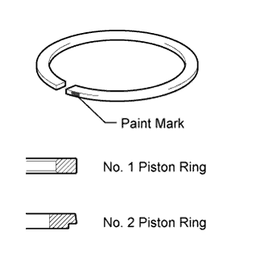 |
Using a piston ring expander, install the No. 1 and No. 2 piston rings.
| Piston Ring | Paint Mark |
| No. 1 | Green Color |
| No. 2 | Peach Color |
| 5. INSTALL CRANKSHAFT PULLEY KEY |
 |
Install the pulley key to the crankshaft.
| 6. INSTALL CRANKSHAFT BEARING |
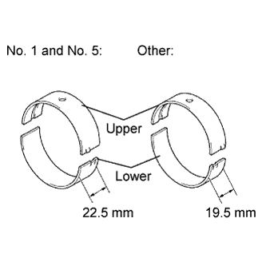 |
 |
Align the bearing claw with the claw groove of the cylinder block, and push in the 5 upper bearings.
 |
Align the bearing claw with the claw groove of the crankshaft bearing cap, and push in the 5 lower bearings.
| 7. INSTALL CRANKSHAFT THRUST WASHER SET |
 |
Apply engine oil to the thrust washer set.
Install the 2 thrust washers under the No. 3 journal position of the cylinder block with the oil grooves facing outward.
 |
Install the 2 thrust washers on the No. 3 crankshaft bearing cap with the grooves facing outward.
| 8. INSTALL CRANKSHAFT |
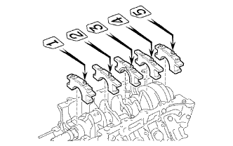 |
Apply engine oil to the upper bearing and lower bearing, then place the crankshaft on the cylinder block.
Install the 5 crankshaft bearing caps in their proper locations.
Apply a light coat of engine oil on the threads and under the heads of the bearing cap bolts.
 |
Install the 10 crankshaft bearing cap bolts.
Uniformly tighten the 10 crankshaft bearing cap bolts in several passes in the sequence shown in the illustration.
 |
Mark the front of the crankshaft bearing cap bolts with paint.
Tighten the crankshaft bearing cap bolts 90° as shown in the illustration.
Check that the painted marks are now at a 90° angle to the front.
Check that the crankshaft turns smoothly.
| 9. INSTALL CONNECTING ROD BEARING |
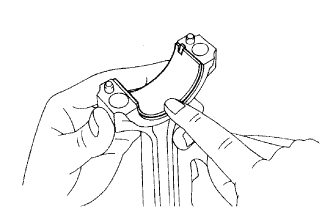 |
Align the bearing claw with the groove of the connecting rod or connecting cap.
Install the bearings in the connecting rod and connecting rod cap.
| 10. INSTALL PISTON AND CONNECTING ROD |
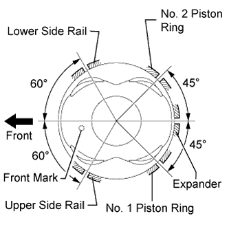 |
Apply engine oil to the cylinder walls, the pistons, and the surfaces of the connecting rod bearings.
Position the piston rings so that the ring ends are as shown in the illustration.
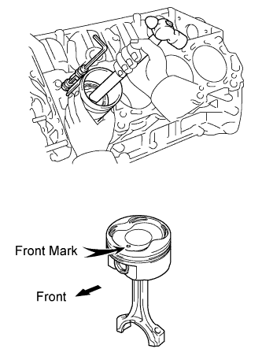 |
Using a hammer handle and piston ring compressor, press a piston and connecting rod assembly into each cylinder with the front mark of the piston facing forward.
| Item | Front Mark |
| for Bank 1 | 1 |
| for Bank 2 | 2 |
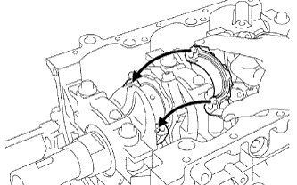 |
Place the connecting rod cap on the connecting rod.
Match the numbered connecting rod cap with the connecting rod.
Align the pin groove of the connecting rod cap with the pins of the connecting rod, and install the connecting rod cap.
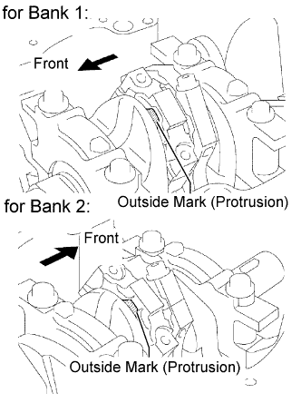 |
Check that the outside mark of the connecting rod cap is facing in the correct direction.
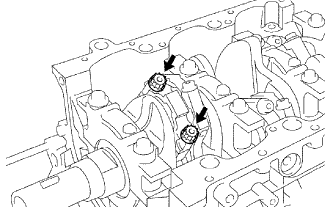 |
Apply a light coat of engine oil on the threads and under the heads of the connecting rod cap bolts.
Install the connecting rod cap bolts.
Install and alternately tighten the 2 connecting rod cap bolts in several passes.
 |
Mark the front of the connecting cap bolt with paint.
Tighten the cap bolts 90° as shown in the illustration.
Check that the painted marks are now at a 90° angle to the front.
Check that the crankshaft turns smoothly.